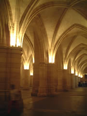
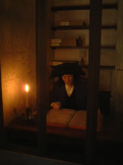
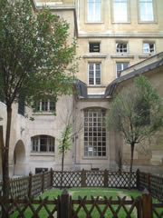
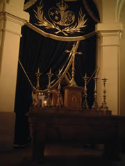
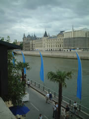
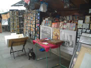
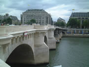
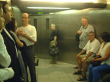
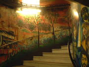
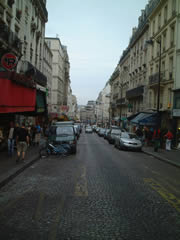
小さな商店がポチポチ。なーんかアメリにこんな感じの町並みがあったなぁーと呆けていたら、アメリの舞台はモンマルトルだったのですね。帰ってから気がつきました。
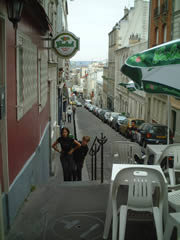
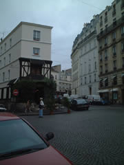
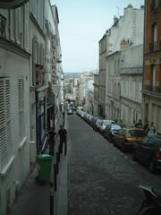
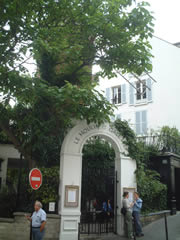
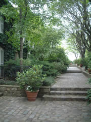
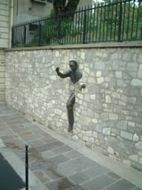
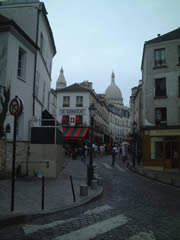
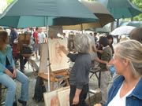
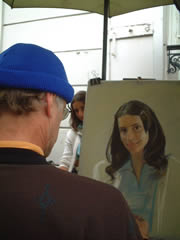
→の女の子はホントーーーーに可愛かった！上手いヒトとヘタなヒトいろいろいます。日本人の似顔絵描きもいました。
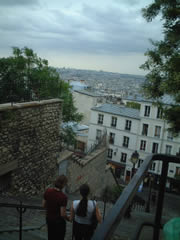
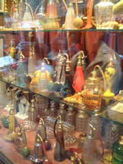
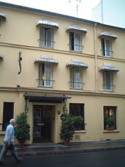
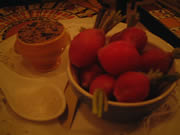
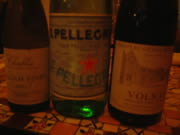
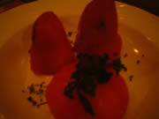
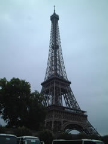
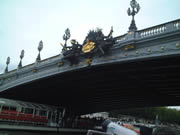
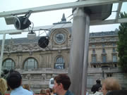
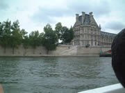
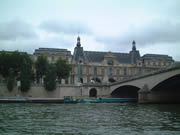
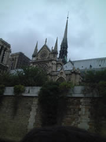
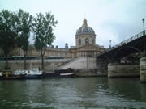
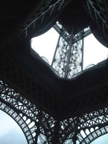
雨が降ってきて、エッフェル塔の下で雨宿り。

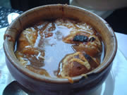
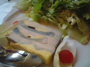
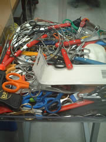
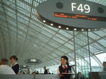
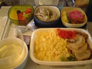
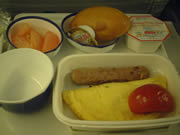
相変わらずマズイ機内食。
唯一お漬物がおいしかった。